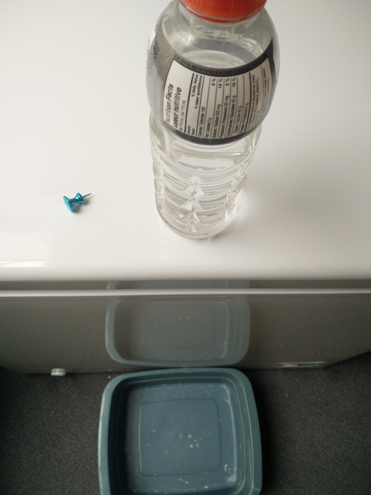
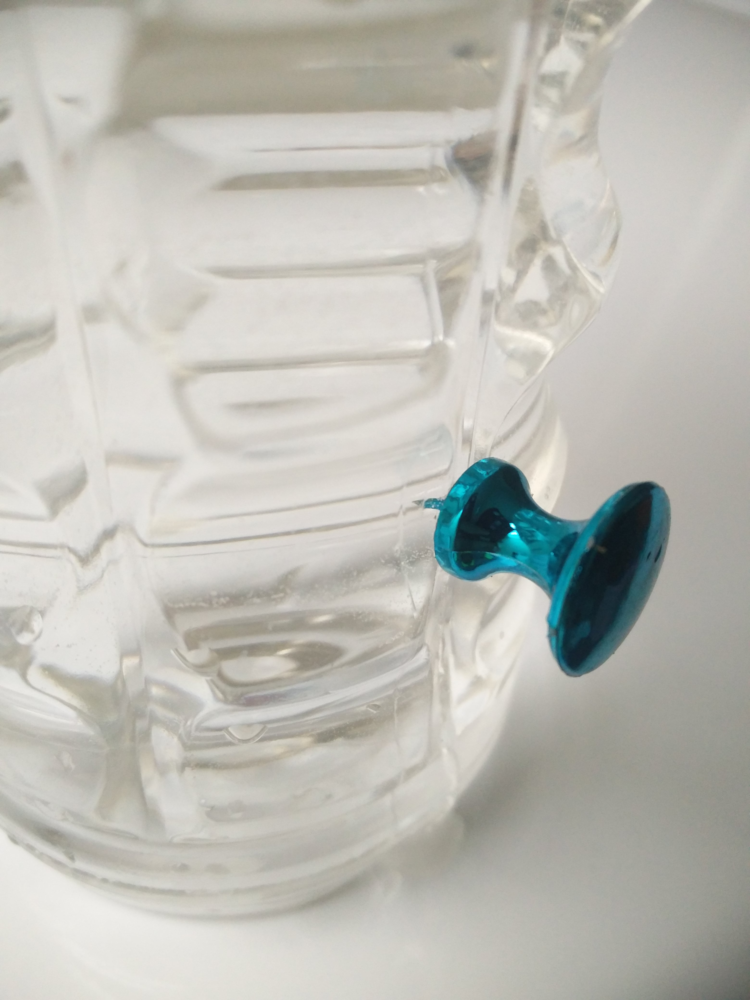
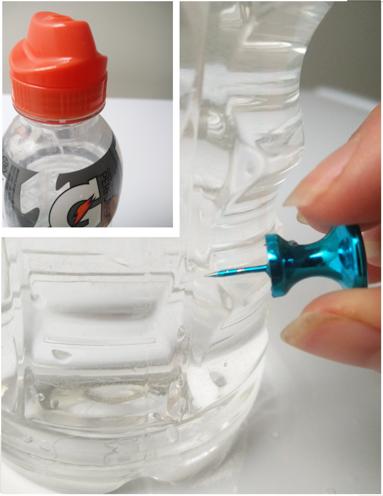
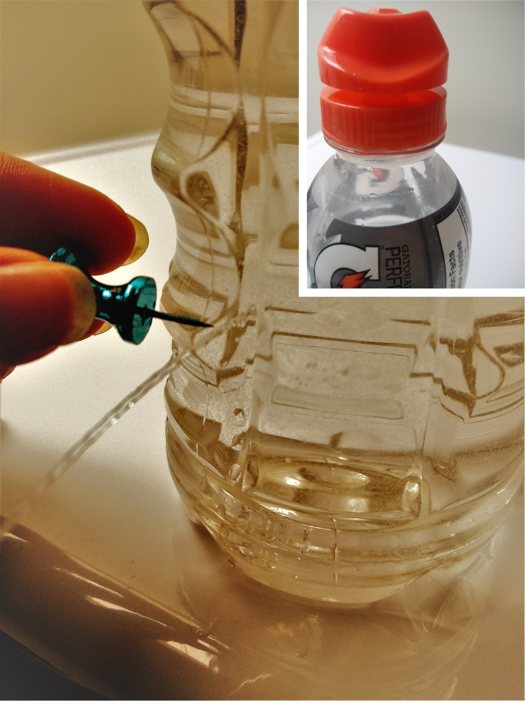

1 Gatorade Bottle
1 Thumb Tack
1 Bucket
1 Towel
The Gatorade bottle lid should be turned to “closed”. The bottle is held over a bucket, which will prevent any water from flowing directly onto the floor. A volunteer student pierces the bottle with a thumb tack. Some water comes out due to squeezing the bottle while extracting the tack, but then the flow stops. A second hole is made next to the first. Still no water streams out. Multiple holes can be made at the same height, no water will stream out. As soon as the cap is twisted to the open position, water will stream out all of the lower holes at the same time. Closing the cap stops the flow. Use the towel to wipe up any spilled water.
   When the bottle cap is twisted open, air comes rushing in the top so that any water particles that leave out the pinhole are replaced by air particles, keeping a constant pressure inside the bottle. However; when the cap is closed, the water at the pinhole is trying to push outwards, but the air outside is pushing inwards. The hole is small enough that the particles can't pass by each other, so there is nowhere for the air to enter to replace the water particles that would be leaving. If the water were to leave, it would lower the pressure inside the bottle because there are fewer particles inside. But the bottle doesn't want its pressure to change! Since we are not adding energy, changing the size of the container, nor adding particles, then the only way to keep the pressure constant is to allow no water can exit. Squeezing the bottle DOES change the size of the container, so that is why the water streams out when you squeeze the bottle. Additionally, if the hole is large enough (turn the bottle upside-down and remove the cap) then there is enough room for air to bubble up into the container and replace the water particles as they leave.